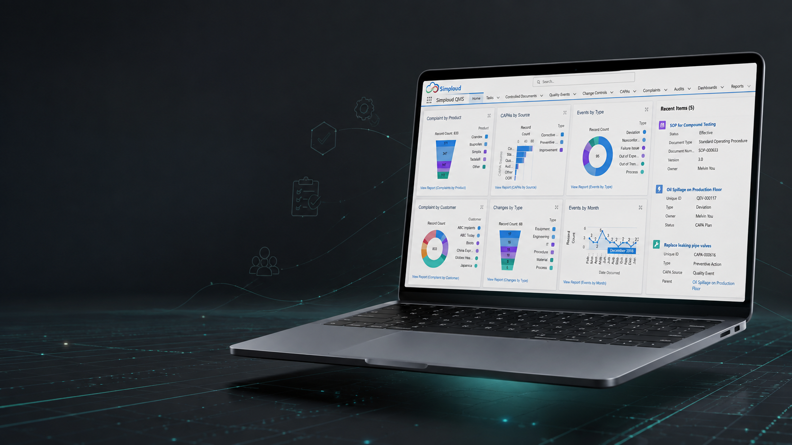
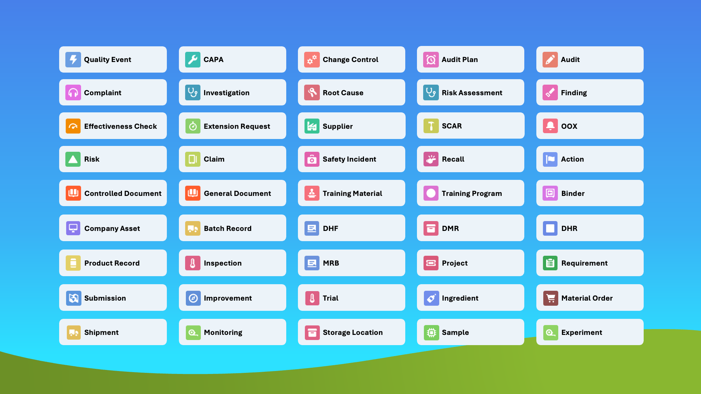

Going digital often starts with going paperless. Document Control keeps procedures, approvals and revisions controlled, traceable and ready when auditors come looking. It also plays an important role in maintaining regulatory compliance.
Quality Management is about connecting the dots and making sure everything comes full circle. From Document Control and Audits to Calibration and EHS, more than 50 quality processes can be brought together on one platform and rolled out at your own pace.